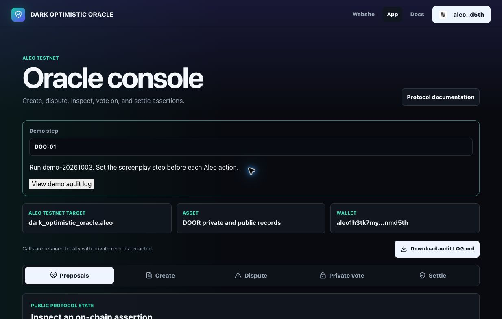
Published Testnet frontend with step markers and the connected QA wallet. Startup program/height reads succeeded; this overview is not a transaction.
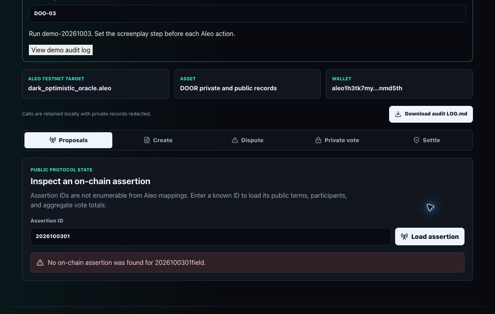
Five actual mapping reads found no assertion at fresh ID 2026100301. Existing QA assertions were not overwritten.
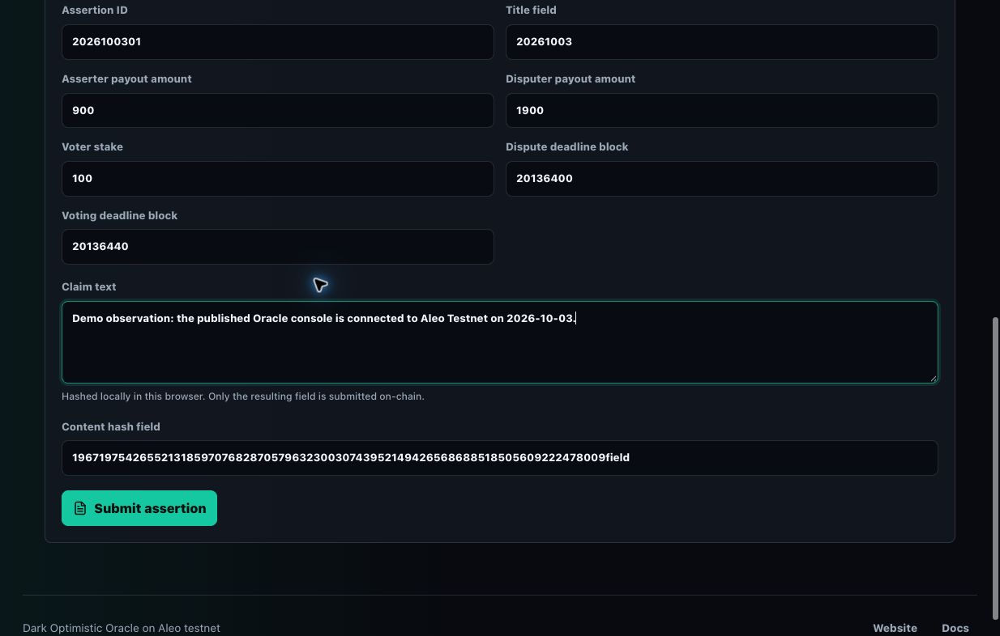
Public assertion inputs: ID 2026100301, title 20261003, 1000-unit DOOR bond, 100-unit voter stake, deadlines 20136400 and 20136440. Claim text is hashed locally.
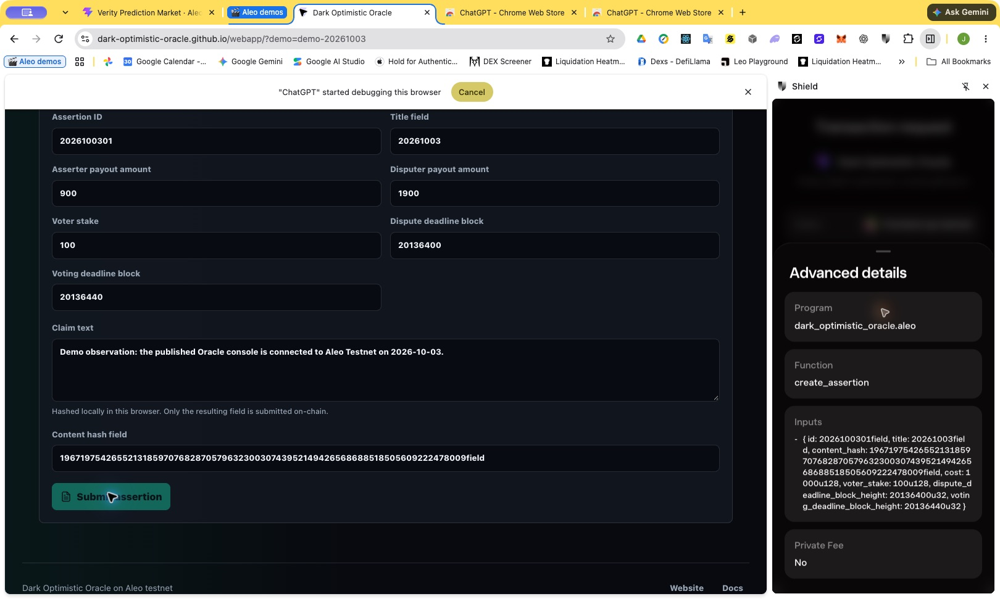
Shield received the create_assertion request. Exact normalized public inputs are retained in LOG.md. Wallet review is not yet blockchain acceptance.
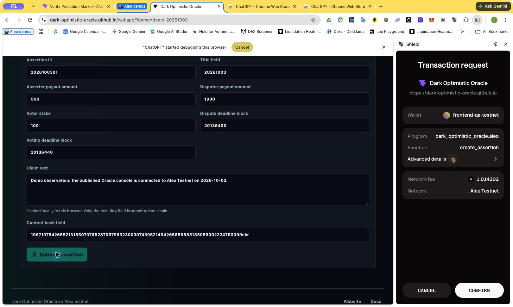
Actual Shield confirmation screen for dark_optimistic_oracle.aleo/create_assertion on Testnet; displayed network fee 1.014202 ALEO. Approval was then given.
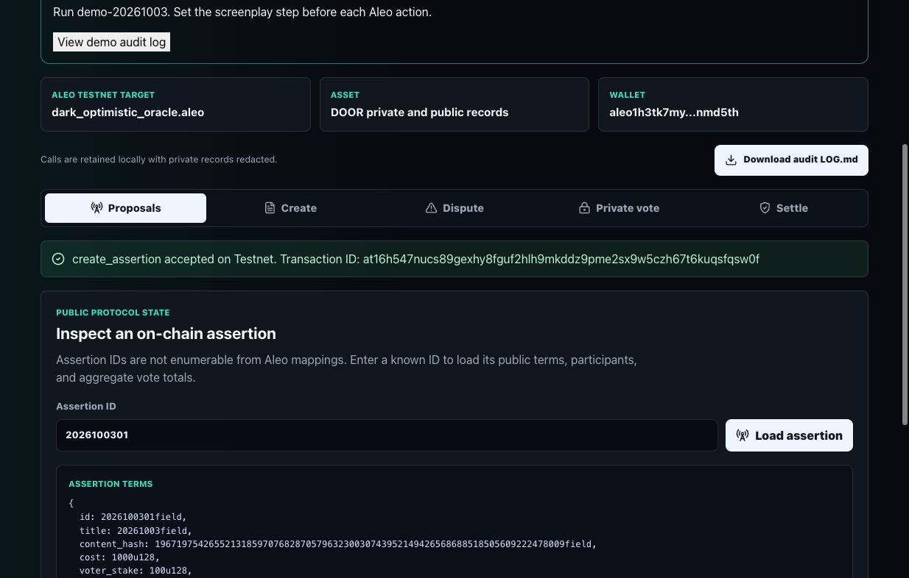
Accepted assertion state: QA asserter, no disputer, zero confirm and deny votes. On-chain terms match the submitted inputs.
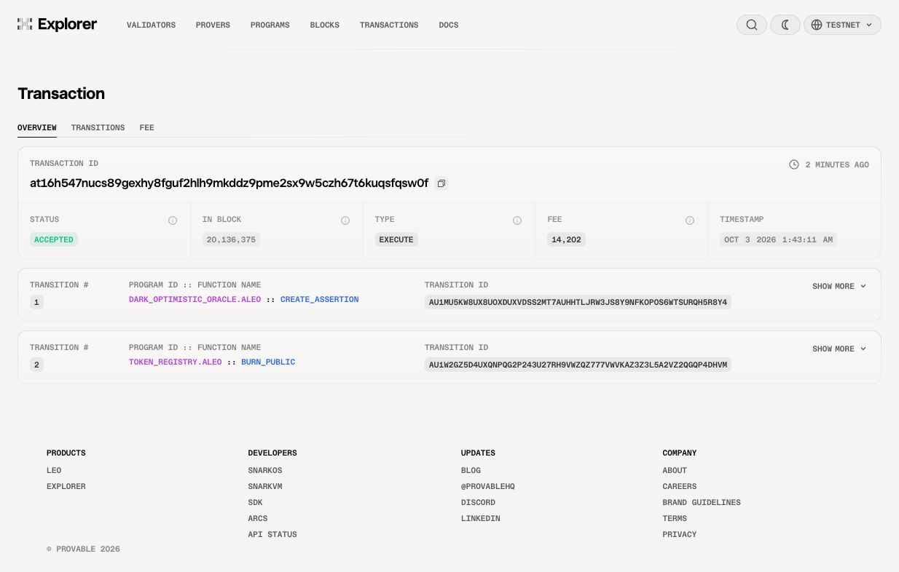
Provable Explorer independently shows ACCEPTED in block 20136375, with create_assertion and nested token_registry.aleo/burn_public transitions.
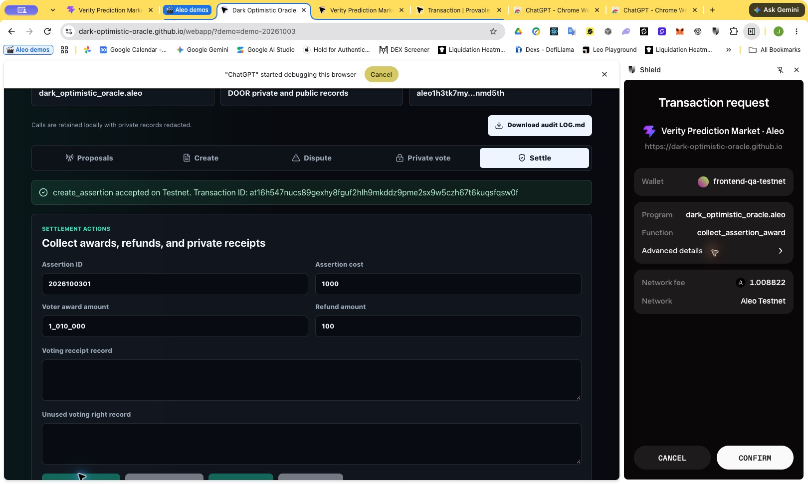
After live height exceeded grace deadline 20136400, Shield reviewed collect_assertion_award(2026100301field,900u128). Its same-origin app label displays Verity; the actual program/function are Oracle.
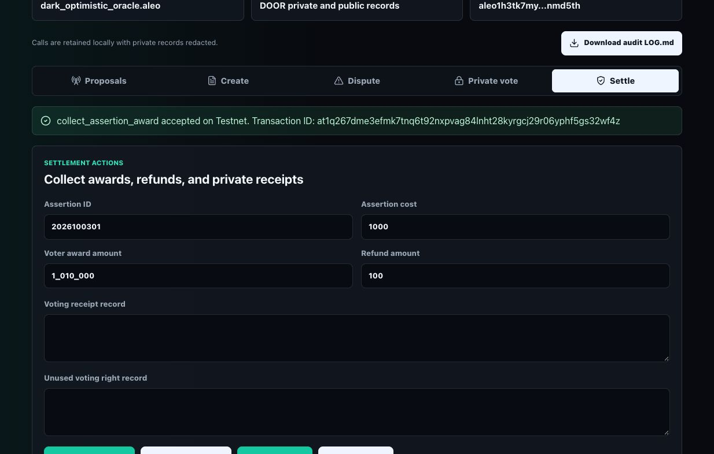
Asserter award collection accepted on Testnet: at1q267dme3efmk7tnq6t92nxpvag84lnht28kyrgcj29r06yphf5gs32wf4z. Private voting and disputed awards remain unrecorded.
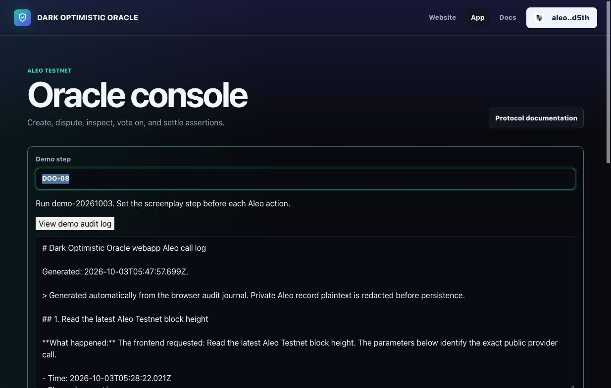
The browser audit export contains human-readable operation explanations plus normalized JSON with the initiating demo step. The downloaded journal was imported into repository LOG.md.
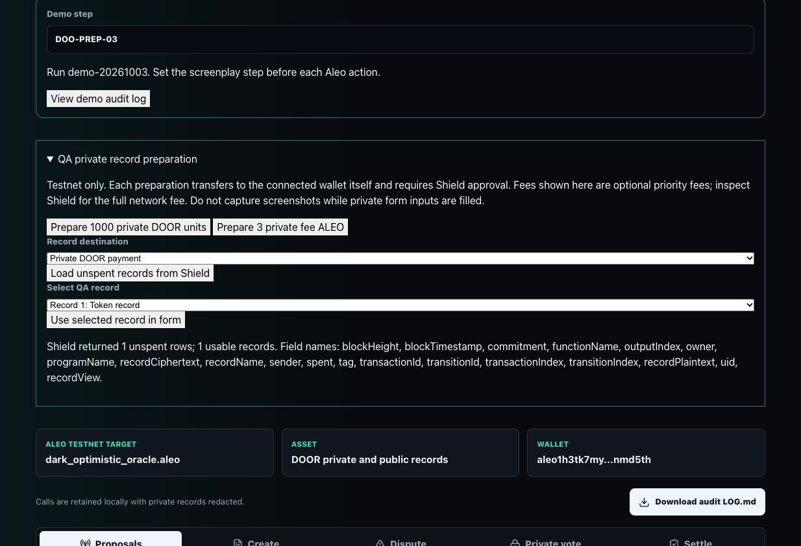
Accepted self-transfers prepared 1000 private DOOR units and 3 private Testnet ALEO. Shield returned one usable registry record; only its availability and schema are shown, not plaintext.
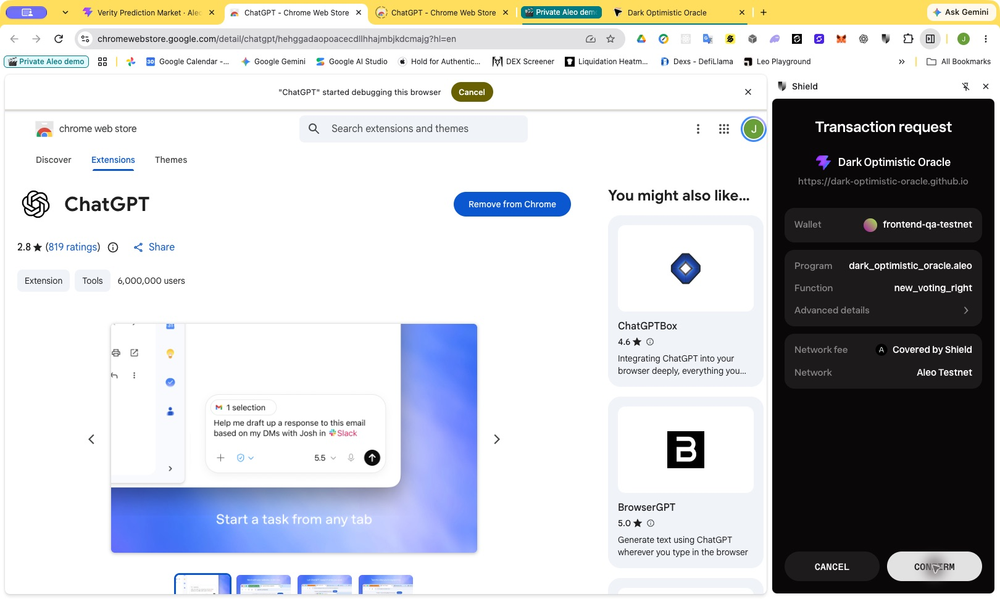
Shield reviewed new_voting_right for assertion 2026100306 with a 100-unit DOOR stake and private fees. The accepted transaction is at1zlufr8rt4we9qvdvqwsq9h0kg6vgyaeupp0ulyu984nffn3jqgpqr86mn4. Private form inputs were cleared before capture.
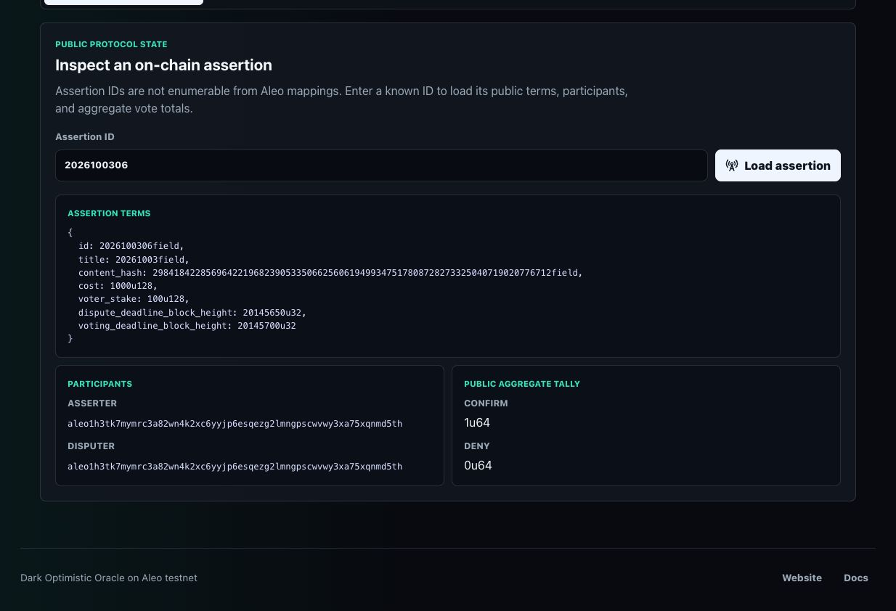
After consuming the private voting right with confirm, public mapping readback shows 1 confirm and 0 deny votes. The 1000-unit assertion bond and 100-unit voter stake are visible; voter record plaintext is not.
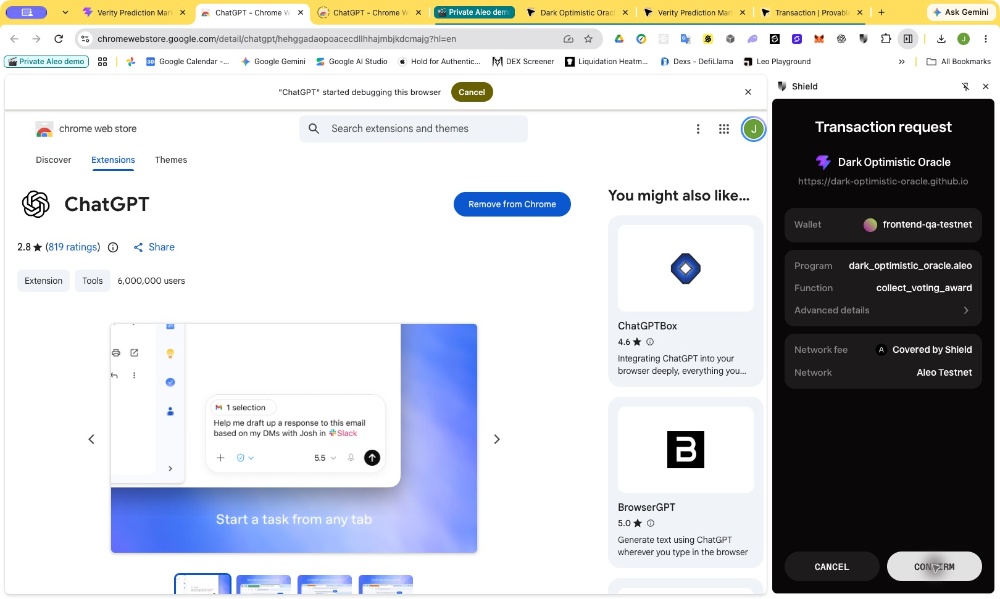
Shield review of collect_voting_award after voting closed. The confirming voter received 101 DOOR units; acceptance and exact public parameters are preserved in LOG.md. Private receipt plaintext is not displayed.
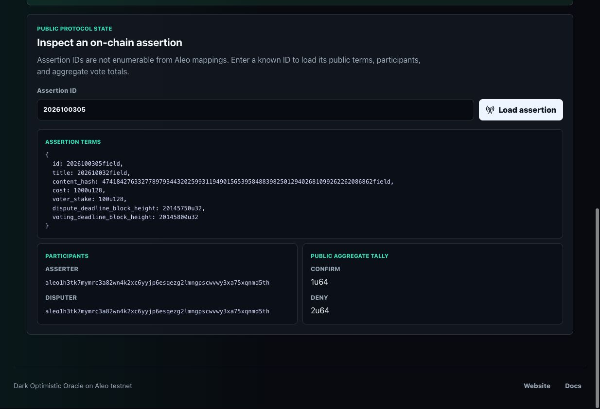
Oracle readback for Verity assertion 2026100305: 1 confirm and 2 deny votes. The reported NO assertion loses. All roles use one QA account; this tests mechanics, not independent consensus.
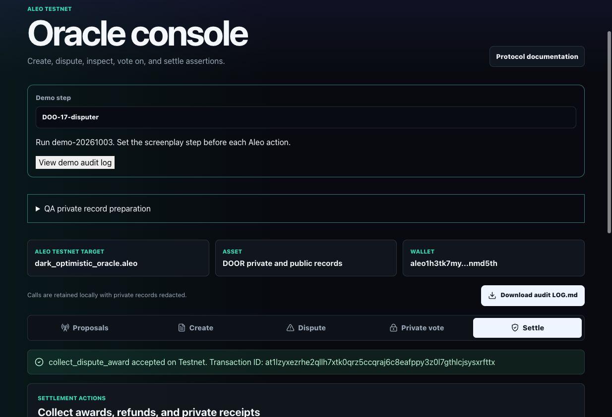
The disputer collected 1900 DOOR units after the denied assertion's deadline. The accepted transaction ID is visible. Earlier confirming-voter awards, asserter payout and unused-right refund are recorded in the calling sequence.